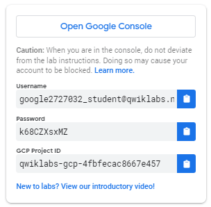
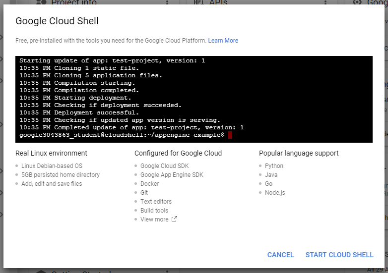

<!DOCTYPE html><html><head><meta charset="utf-8"><title>在 GCP 上建立 VM 架設 Windows Server | Titangene Blog</title><meta http-equiv="X-UA-Compatible" content="IE=edge"><meta name="viewport" content="width=device-width,initial-scale=1,maximum-scale=1"><meta name="HandheldFriendly" content="True"><meta name="apple-mobile-web-app-capable" content="yes"><meta name="author" content="Titangene"><link rel="shortcut icon" href="/favicon.ico"><link rel="alternate" href="/atom.xml" title="Titangene Blog"><meta name="description" content="本篇是紀錄在 Google 的 Qwiklab 平台內，完成「Compute Engine: Qwik Start - Windows」這個 quest 所學到的內容，包括如何透過 GCP Console 在 GCP 建立 instance 架設 Windows Server，以及如何使用 Chrome RDP for GCP 擴充功能直接從瀏覽器進行 RDP 連接至 Windows Server"><meta property="og:type" content="article"><meta property="og:title" content="在 GCP 上建立 VM 架設 Windows Server"><meta property="og:url" content="https://titangene.github.io/article/gcp-vm-windows-server.html"><meta property="og:site_name" content="Titangene Blog"><meta property="og:description" content="本篇是紀錄在 Google 的 Qwiklab 平台內，完成「Compute Engine: Qwik Start - Windows」這個 quest 所學到的內容，包括如何透過 GCP Console 在 GCP 建立 instance 架設 Windows Server，以及如何使用 Chrome RDP for GCP 擴充功能直接從瀏覽器進行 RDP 連接至 Windows Server"><meta property="og:locale" content="zh_TW"><meta property="og:image" content="https://titangene.github.io/images/cover/gcp.jpg"><meta property="article:published_time" content="2019-04-16T13:17:46.000Z"><meta property="article:modified_time" content="2019-04-30T15:56:57.000Z"><meta property="article:author" content="Titangene"><meta property="article:tag" content="GCP"><meta property="article:tag" content="VM"><meta name="twitter:card" content="summary_large_image"><meta name="twitter:image" content="https://titangene.github.io/images/cover/gcp.jpg"><meta name="twitter:creator" content="@titangeneTW"><meta name="twitter:site" content="@titangene_blog"><meta property="fb:admins" content="100001106016019"><meta property="fb:app_id" content="2470546159839111"><meta property="og:image:width" content="1200"><meta property="og:image:height" content="630"><meta name="google-site-verification" content="AaJ39L7h-nWwJjXJMhAMtXSF6H6BUgGWXC80kYvLic8"><link href="https://fonts.googleapis.com/css2?family=Roboto&display=swap" rel="stylesheet"><link href="https://fonts.googleapis.com/css?family=Source+Code+Pro&display=swap" rel="stylesheet"><link rel="stylesheet" href="https://cdnjs.cloudflare.com/ajax/libs/font-awesome/5.13.0/css/all.min.css"><link rel="stylesheet" href="https://unpkg.com/gitalk/dist/gitalk.css"><link rel="stylesheet" href="/style.css"><script async src="https://www.googletagmanager.com/gtag/js?id=UA-129758206-1"></script><script>!function(a){function n(){dataLayer.push(arguments)}a.dataLayer=a.dataLayer||[],n("js",new Date),n("config","UA-129758206-1")}(window)</script><script>function setLoadingBarProgress(e){document.getElementById("loading-bar").style.width=e+"%"}</script><meta name="generator" content="Hexo 4.2.0"><link rel="alternate" href="/atom.xml" title="Titangene Blog" type="application/atom+xml"></head></html><body><div id="loading-bar-wrapper"><div id="loading-bar"></div></div><script>setLoadingBarProgress(20)</script><header class="l_header"><div class="wrapper"><div class="nav-main container container--flex"><a class="logo flat-box" href="/">Titangene Blog</a><div class="menu"><ul class="h-list"><li><a class="flat-box nav-home" href="/">Home</a></li><li><a class="flat-box nav-archives" href="/archives">Archives</a></li></ul><div class="underline"></div></div><div class="m_search"><form name="searchform" class="form u-search-form"><input type="text" class="input u-search-input" placeholder="Search"> <i class="fas fa-search"></i></form></div><ul class="switcher h-list"><li class="s-search"><a class="fas fa-search" href="javascript:void(0)"></a></li><li class="s-menu"><a class="fas fa-bars" href="javascript:void(0)"></a></li></ul></div><div class="nav-sub container container--flex"><a class="logo flat-box" href="/">Titangene Blog</a><ul class="switcher h-list"><li class="s-comment"><a class="far fa-comment-alt" href="javascript:void(0)"></a></li><li class="s-top"><a class="fas fa-arrow-up" href="javascript:void(0)"></a></li><li class="s-toc"><a class="fas fa-list-ol" href="javascript:void(0)"></a></li></ul></div></div></header><aside class="menu-phone"><nav><a href="/" class="nav-home nav">Home </a><a href="/archives" class="nav-archives nav">Archives</a></nav></aside><script>setLoadingBarProgress(40)</script><div class="l_body"><div class="container clearfix"><div class="l_main"><article id="post-gcp-vm-windows-server" class="post white-box article-type-post" itemscope itemprop="blogPost"><section class="meta"><h2 class="title"><a href="/article/gcp-vm-windows-server.html">在 GCP 上建立 VM 架設 Windows Server</a></h2><span class="post-time"><span class="post-meta-item-icon"><i class="fa fa-calendar"></i> </span><span class="post-meta-item-text">發表於</span> <time title="建立時間：2019-04-16 21:17:46" itemprop="dateCreated datePublished" datetime="2019-04-16T21:17:46+08:00">2019-04-16 </time><span class="post-meta-divider">|</span> <span class="post-meta-item-icon"><i class="fa fa-calendar-check"></i> </span><span class="post-meta-item-text">更新於</span> <time title="修改時間：2019-04-30 23:56:57" itemprop="dateModified" datetime="2019-04-30T23:56:57+08:00">2019-04-30</time></span> <span class="comments-count"><span class="post-meta-divider">|</span> <span class="post-meta-item-icon"><i class="fas fa-comment"></i> </span><a href="https://titangene.github.io/article/gcp-vm-windows-server.html#comments" class="article-comment-count">留言</a></span><div class="post-category"><span class="post-meta-item-icon"><i class="fa fa-folder"></i> </span><span class="post-meta-item-text">分類於</span> <span itemprop="about" itemscope itemtype="http://schema.org/Thing"><a href="/categories/windows-server/" itemprop="url" rel="index"><span itemprop="name">Windows Server</span></a>, <a href="/categories/windows-server/cloud/" itemprop="url" rel="index"><span itemprop="name">Cloud</span></a></span></div></section><section class="toc-wrapper"><h3>目錄</h3><ol class="toc"><li class="toc-item toc-level-2"><a class="toc-link" href="#準備"><span class="toc-text">準備</span></a></li><li class="toc-item toc-level-2"><a class="toc-link" href="#開始你的-Lab，然後登入-GCP-Console"><span class="toc-text">開始你的 Lab，然後登入 GCP Console</span></a></li><li class="toc-item toc-level-2"><a class="toc-link" href="#建立-VM-instance"><span class="toc-text">建立 VM instance</span></a></li><li class="toc-item toc-level-2"><a class="toc-link" href="#啟動-Google-Cloud-Shell"><span class="toc-text">啟動 Google Cloud Shell</span></a></li><li class="toc-item toc-level-2"><a class="toc-link" href="#測試-Windows-Startup-的狀態"><span class="toc-text">測試 Windows Startup 的狀態</span></a></li><li class="toc-item toc-level-2"><a class="toc-link" href="#連接-instance"><span class="toc-text">連接 instance</span></a></li><li class="toc-item toc-level-2"><a class="toc-link" href="#使用遠端桌面-RDP-進入-Windows-Server"><span class="toc-text">使用遠端桌面 (RDP) 進入 Windows Server</span></a></li><li class="toc-item toc-level-2"><a class="toc-link" href="#使用-RDP-client-複製和貼上"><span class="toc-text">使用 RDP client 複製和貼上</span></a></li><li class="toc-item toc-level-2"><a class="toc-link" href="#參考來源"><span class="toc-text">參考來源</span></a></li></ol></section><section class="article typo"><div class="article-entry" itemprop="articleBody"><p></p><p>本篇是紀錄在 Google 的 Qwiklab 平台內，完成「<a href="https://www.qwiklabs.com/focuses/560?parent=catalog" target="_blank" rel="noopener">Compute Engine: Qwik Start - Windows</a>」這個 quest 所學到的內容，包括如何透過 GCP Console 在 GCP 建立 instance 架設 Windows Server，以及如何使用 <a href="https://chrome.google.com/webstore/detail/chrome-rdp-for-google-clo/mpbbnannobiobpnfblimoapbephgifkm" target="_blank" rel="noopener">Chrome RDP for GCP</a> 擴充功能直接從瀏覽器進行 RDP 連接至 Windows Server。</p><a id="more"></a><p></p><p>Google Compute Engine 可讓你在 Google 基礎架構上建立和執行 VM。 Compute Engine 提供擴展、效能和價值，讓你可以輕鬆地在 Google 基礎架構上啟動大型運算群集。</p><p>你可以在 Google Compute Engine 上執行 Windows 應用程式，並利用 VM instance 可用的許多優勢，例如：可靠的<a href="https://cloud.google.com/compute/docs/disks/" target="_blank" rel="noopener">儲存選項</a>、<a href="https://cloud.google.com/compute/docs/vpc" target="_blank" rel="noopener">Google 網路</a>的速度和<a href="https://cloud.google.com/compute/docs/autoscaler/" target="_blank" rel="noopener">自動擴展 (Autoscaling)</a>。</p><p>在此 lab 中，你將學習如何在 Google Compute Engine 中啟動 Windows Server instance，並使用遠端桌面協定連接到該 instance。</p><blockquote><p>若想了解如何 <a href="./gcp-vm-nignx-web-server.html">在 GCP 上建立 VM 架設 NIGNX Web server</a> 可參考此篇。</p></blockquote><p>如果你未在 local 主機上使用 Windows，請安裝第三方的 RDP client，例如：FusionLabs 的 <a href="https://chrome.google.com/webstore/detail/chrome-rdp/cbkkbcmdlboombapidmoeolnmdacpkch" target="_blank" rel="noopener">Chrome RDP</a>。</p><h2 id="準備"><a class="header-anchor" href="#準備"></a>準備</h2><p>在點擊「Start Lab」之前，準備好網路瀏覽器 (推薦用 Google Chrome)，並且至少 40 分鐘可以專注的時間，因為 lab 是有時間限制，當你按下「Start Lab」開始學習時，無法暫停倒數計時，你只能在這段時間內使用 lab 提供給你的全新暫時 GCP Console 可用帳號，時間到之後的幾分鐘就會自動登出。</p><div class="warning"><p>注意：如果你有自己的個人 GCP 帳號或專案，請不要在此 lab 使用</p></div><h2 id="開始你的-Lab，然後登入-GCP-Console"><a class="header-anchor" href="#開始你的-Lab，然後登入-GCP-Console"></a>開始你的 Lab，然後登入 GCP Console</h2><ol><li>如果準備要開始，可以點擊右上角的「Start Lab」開始：</li></ol><p></p><ol start="2"><li>接著會出現這個畫面，因為我參加 <a href="https://www.facebook.com/events/2005848903055499/" target="_blank" rel="noopener">GDG Tainan</a> 的活動，活動有提供 Qwiklabs 一個月的免費額度，所以我點選下圖左邊的「Use Subscription」：</li></ol><p></p><ol start="3"><li>Lab 會提供給你免費暫時的 GCP 帳號，複製帳號和密碼，然後點擊「Open Google Console」開啟 <a href="https://cloud.google.com/storage/docs/cloud-console" target="_blank" rel="noopener">GCP Console</a>：</li></ol><p></p><p>圖片來源：<a href="https://www.qwiklabs.com/focuses/3563?parent=catalog" target="_blank" rel="noopener">Creating a Virtual Machine | Qwiklabs</a></p><ol start="4"><li>接著就會開啟登入頁面，建議另外開 Chrome 無痕模式來登入 lab 提供的帳號和密碼，因為 Chrome 會紀錄帳密，現在登入的只是暫時帳號，未來不需要用到：</li></ol><div class="warning"><p>注意：這邊是登入 lab 提供的帳號 (也就是 email 必須為 <code>googlexxxxxx_student@qwiklabs.net</code> )，如果你有自己的 GCP 帳號，請不要用於此 lab，避免產生費用</p><blockquote><p>類似於 <code>googlexxxxxx_student@qwiklabs.net</code> 的帳號是一個 Google 帳號，專為 Qwiklabs 學生使用而建立的。它具有特定的域名 (也就是 <code>qwiklabs.net</code> )，並且已分配了 IAM 角色，允許你去存取該 GCP 專案。</p></blockquote></div><p></p><ol start="5"><li>接受 terms 和 conditions：</li></ol><p></p><ol start="6"><li>不要新增 recovery options 或 two-factor authentication (因為這是一個臨時帳號)</li></ol><p></p><ol start="7"><li>勾選同意服務條款：</li></ol><p></p><p>之後就可以開始使用 GCP Console 囉：</p><p></p><h2 id="建立-VM-instance"><a class="header-anchor" href="#建立-VM-instance"></a>建立 VM instance</h2><p>在 GCP Console 的左上角，點選「Navigation menu &gt; Compute Engine &gt; VM Instances」：</p><p></p><p>接著點擊「Create」按鈕建立新的 instance：</p><p></p><p>在「Boot disk」部分中，點擊「Change」按鈕以開始配置 boot disk：</p><p></p><p>選擇「Windows Server 2012 R2 Datacenter」，然後點擊「Select」按鈕：</p><p></p><p>將所有其他設定都保留為預設值。設定好之後，點擊「Create」按鈕建立 instance：</p><p></p><h2 id="啟動-Google-Cloud-Shell"><a class="header-anchor" href="#啟動-Google-Cloud-Shell"></a>啟動 Google Cloud Shell</h2><p>Google Cloud Shell 是載入了開發工具的 VM，它提供 5GB 的 home 目錄，並在 Google Cloud 上執行。可用 Google Cloud Shell 提供的 command-line 來存取 GCP 的資源。</p><ol><li>在 GCP console 的右上方工具列中，點擊「Activate Cloud Shell」按鈕：</li></ol><p></p><ol start="2"><li>在打開的對話框內，點擊「START CLOUD SHELL」：</li></ol><p></p><ol start="3"><li>連接和提供環境需要一些時間：</li></ol><p></p><ol start="4"><li>連接後，就代表你已經過身份驗證，專案已設置為 <code>PROJECT_ID</code>，以下圖的為例，此專案的 ID 為 <code>qwiklabs-gcp-f9d61ede8167e6b0</code>：</li></ol><p></p><p>使用下面指令可列出有效帳號名稱：</p><figure class="highlight shell"><table><tr><td class="gutter"><pre><span class="line">1</span><br><span class="line">2</span><br><span class="line">3</span><br><span class="line">4</span><br><span class="line">5</span><br><span class="line">6</span><br><span class="line">7</span><br></pre></td><td class="code"><pre><code class="hljs shell"><span class="hljs-meta">$</span><span class="bash"> gcloud auth list</span><br>          Credentialed Accounts<br>ACTIVE  ACCOUNT<br>*       google3043863_student@qwiklabs.net<br><br>To set the active account, run:<br>    $ gcloud config set account `ACCOUNT`<br></code></pre></td></tr></table></figure><p>可以使用以下指令列出專案 ID：</p><figure class="highlight shell"><table><tr><td class="gutter"><pre><span class="line">1</span><br><span class="line">2</span><br><span class="line">3</span><br><span class="line">4</span><br><span class="line">5</span><br></pre></td><td class="code"><pre><code class="hljs shell"><span class="hljs-meta">$</span><span class="bash"> gcloud config list project</span><br>[core]<br>project = qwiklabs-gcp-f9d61ede8167e6b0<br><br>Your active configuration is: [cloudshell-9292]<br></code></pre></td></tr></table></figure><blockquote><p>詳情可參考官方的 <a href="https://cloud.google.com/sdk/gcloud" target="_blank" rel="noopener">Google Cloud gcloud Overview</a> 文件。</p></blockquote><h2 id="測試-Windows-Startup-的狀態"><a class="header-anchor" href="#測試-Windows-Startup-的狀態"></a>測試 Windows Startup 的狀態</h2><p>在「VM Instances」頁面上看到帶有綠色狀態的 icon 就代表該 instance 已建立完成，如下圖：</p><p></p><p>但是，它可能尚未準備好接受 RDP 連接，因為所有 OS 元件初始化都需要一段時間。</p><p>要查看 server 是否已準備好進行 RDP 連接，請在 Cloud Shell terminal command-line 中執行以下指令，其中的 <code>instance-1</code> 是剛剛建立的 instance 名稱：</p><figure class="highlight shell"><table><tr><td class="gutter"><pre><span class="line">1</span><br></pre></td><td class="code"><pre><code class="hljs shell"><span class="hljs-meta">$</span><span class="bash"> gcloud compute instances get-serial-port-output instance-1 --zone us-central1<span class="hljs-_">-a</span></span><br></code></pre></td></tr></table></figure><p>重複這個指令，直到指令輸出以下內容為止。這個指令的輸出會告訴你 OS 元件已初始化，並且 Windows Server 已準備好接受 RDP 連接 (嘗試下一步)。</p><figure class="highlight shell"><table><tr><td class="gutter"><pre><span class="line">1</span><br></pre></td><td class="code"><pre><code class="hljs shell">Finished running startup scripts.<br></code></pre></td></tr></table></figure><p>這個指令完整的輸出訊息會類似下面這樣：</p><figure class="highlight shell"><table><tr><td class="gutter"><pre><span class="line">1</span><br><span class="line">2</span><br><span class="line">3</span><br><span class="line">4</span><br><span class="line">5</span><br><span class="line">6</span><br><span class="line">7</span><br><span class="line">8</span><br><span class="line">9</span><br><span class="line">10</span><br><span class="line">11</span><br><span class="line">12</span><br><span class="line">13</span><br><span class="line">14</span><br><span class="line">15</span><br><span class="line">16</span><br><span class="line">17</span><br><span class="line">18</span><br><span class="line">19</span><br><span class="line">20</span><br><span class="line">21</span><br><span class="line">22</span><br><span class="line">23</span><br><span class="line">24</span><br><span class="line">25</span><br><span class="line">26</span><br><span class="line">27</span><br><span class="line">28</span><br><span class="line">29</span><br><span class="line">30</span><br><span class="line">31</span><br><span class="line">32</span><br><span class="line">33</span><br><span class="line">34</span><br><span class="line">35</span><br><span class="line">36</span><br><span class="line">37</span><br><span class="line">38</span><br><span class="line">39</span><br><span class="line">40</span><br><span class="line">41</span><br><span class="line">42</span><br><span class="line">43</span><br><span class="line">44</span><br><span class="line">45</span><br><span class="line">46</span><br><span class="line">47</span><br><span class="line">48</span><br><span class="line">49</span><br><span class="line">50</span><br><span class="line">51</span><br><span class="line">52</span><br><span class="line">53</span><br><span class="line">54</span><br><span class="line">55</span><br><span class="line">56</span><br><span class="line">57</span><br><span class="line">58</span><br><span class="line">59</span><br><span class="line">60</span><br><span class="line">61</span><br><span class="line">62</span><br><span class="line">63</span><br><span class="line">64</span><br><span class="line">65</span><br><span class="line">66</span><br></pre></td><td class="code"><pre><code class="hljs shell"><span class="hljs-meta">$</span><span class="bash"> gcloud compute instances get-serial-port-output instance-1 --zone us-central1<span class="hljs-_">-a</span></span><br>SeaBIOS (version 1.8.2-20190322_093631-google)<br>Total RAM Size = 0x00000000f0000000 = 3840 MiB<br>CPUs found: 1     Max CPUs supported: 1<br>found virtio-scsi at 0:3<br>virtio-scsi vendor='Google' product='PersistentDisk' rev='1' type=0 removable=0<br>virtio-scsi blksize=512 sectors=104857600 = 51200 MiB<br>drive 0x000f29f0: PCHS=0/0/0 translation=lba LCHS=1024/255/63 s=104857600<br>Booting from Hard Disk 0...<br>2019/04/15 15:39:21 GCEWindowsAgent: GCE Agent Started (version 4.6.0@1)<br>2019/04/15 15:39:56 GCEInstanceSetup: Starting sysprep specialize phase.<br>2019/04/15 15:39:57 GCEInstanceSetup: All networks set to DHCP.<br>2019/04/15 15:39:57 GCEInstanceSetup: Running 'netsh' with arguments 'interface ipv4 set interface Ethernet mtu=1460'<br>2019/04/15 15:39:57 GCEInstanceSetup: --&gt; Ok.<br>2019/04/15 15:39:58 GCEInstanceSetup: MTU set to 1460.<br>2019/04/15 15:39:58 GCEInstanceSetup: Running 'route' with arguments '/p add 169.254.169.254 mask 255.255.255.255 0.0.0.0 if 12 metric 1'<br>2019/04/15 15:39:58 GCEInstanceSetup: --&gt; OK!<br>2019/04/15 15:39:58 GCEInstanceSetup: Added persistent route to metadata netblock via first netkvm adapter.<br>2019/04/15 15:39:58 GCEInstanceSetup: Getting hostname from metadata server.<br>2019/04/15 15:39:58 GCEInstanceSetup: Changing hostname from WIN-MQ2QFF14J03 to instance-1.<br>2019/04/15 15:39:58 GCEInstanceSetup: Renamed from WIN-MQ2QFF14J03 to instance-1.<br>2019/04/15 15:39:58 GCEMetadataScripts: Starting specialize scripts (version 4.2.1@1).<br>2019/04/15 15:39:58 GCEMetadataScripts: No specialize scripts to run.<br>2019/04/15 15:39:58 GCEMetadataScripts: Finished running specialize scripts.<br>2019/04/15 15:39:58 GCEInstanceSetup: Finished with sysprep specialize phase, restarting...<br>2019/04/15 15:39:59 GCEWindowsAgent: GCE Agent Stopped<br>SeaBIOS (version 1.8.2-20190322_093631-google)<br>Total RAM Size = 0x00000000f0000000 = 3840 MiB<br>CPUs found: 1     Max CPUs supported: 1<br>found virtio-scsi at 0:3<br>virtio-scsi vendor='Google' product='PersistentDisk' rev='1' type=0 removable=0<br>virtio-scsi blksize=512 sectors=104857600 = 51200 MiB<br>drive 0x000f29f0: PCHS=0/0/0 translation=lba LCHS=1024/255/63 s=104857600<br>Booting from Hard Disk 0...<br>2019/04/15 15:40:36 GCEWindowsAgent: GCE Agent Started (version 4.6.0@1)<br>2019/04/15 15:40:43 GCEInstanceSetup: Disabled Ctrl + Alt + Del.<br>2019/04/15 15:40:43 GCEInstanceSetup: Enable RDP firewall rules.<br>2019/04/15 15:40:43 GCEInstanceSetup: Running 'netsh' with arguments 'advfirewall firewall set rule group=remote desktop new enable=Yes'<br>2019/04/15 15:40:43 GCEInstanceSetup: --&gt; Updated 3 rule(s).<br>2019/04/15 15:40:43 GCEInstanceSetup: --&gt; Ok.<br>2019/04/15 15:40:43 GCEInstanceSetup: Restarting Terminal Service services, to enable RDP.<br>2019/04/15 15:40:44 GCEInstanceSetup: Enabled Remote Desktop.<br>2019/04/15 15:40:44 GCEInstanceSetup: Configuring WinRM...<br>2019/04/15 15:40:47 GCEInstanceSetup: Running 'netsh' with arguments 'advfirewall firewall add rule profile=any name=Windows Remote Management (HTTPS-In) dir=in localport=5986 protocol=TCP action=allow'<br>2019/04/15 15:40:47 GCEInstanceSetup: --&gt; Ok.<br>2019/04/15 15:40:48 GCEInstanceSetup: Setup of WinRM complete.<br>2019/04/15 15:40:48 GCEInstanceSetup: Running startup scripts from metadata server.<br>2019/04/15 15:40:48 GCEInstanceSetup: Running 'schtasks' with arguments '/run /tn GCEStartup'<br>2019/04/15 15:40:48 GCEInstanceSetup: --&gt; SUCCESS: Attempted to run the scheduled task "GCEStartup".<br>2019/04/15 15:40:48 GCEInstanceSetup: ------------------------------------------------------------<br>2019/04/15 15:40:48 GCEInstanceSetup: Instance setup finished. instance-1 is ready to use.<br>2019/04/15 15:40:48 GCEInstanceSetup: ------------------------------------------------------------<br>2019/04/15 15:40:51 GCEInstanceSetup: Checking instance license activation status.<br>2019/04/15 15:40:51 GCEInstanceSetup: instance-1 needs to be activated by a KMS Server.<br>2019/04/15 15:40:51 GCEInstanceSetup: Key Management Service machine name set to kms.windows.googlecloud.com successfully.<br>2019/04/15 15:40:51 GCEInstanceSetup: Installed product key W3GGN-FT8W3-Y4M27-J84CP-Q3VJ9 successfully.<br>2019/04/15 15:40:51 GCEInstanceSetup: Activating instance...<br>2019/04/15 15:40:52 GCEInstanceSetup: Activating Windows(R), ServerDatacenter edition (00091344-1ea4-4f37-b789-01750ba6988c) ...<br>2019/04/15 15:40:52 GCEInstanceSetup: Product activated successfully.<br>2019/04/15 15:40:52 GCEInstanceSetup: Activation successful.<br>2019/04/15 15:40:53 GCEMetadataScripts: Starting startup scripts (version 4.2.1@1).<br>2019/04/15 15:40:53 GCEMetadataScripts: No startup scripts to run.<br>2019/04/15 15:40:53 GCEMetadataScripts: Finished running startup scripts.<br><br><br>Specify --start=4643 in the next get-serial-port-output invocation to get only the new output starting from here.<br></code></pre></td></tr></table></figure><h2 id="連接-instance"><a class="header-anchor" href="#連接-instance"></a>連接 instance</h2><p>點擊 VM 的名稱：</p><p></p><p>在「Remote Access」部分點擊「Set Windows Password」按鈕：</p><p></p><p>輸入 username 後，點擊「Set」按鈕來產生此 Windows instance 的密碼。如果沒有此 username 的 Windows 帳號，就會建立該帳號並使用新密碼，如果已有此帳號，密碼則會被重設：</p><p></p><p>複製密碼並儲存，稍後登入 instance 時會用到：</p><p></p><h2 id="使用遠端桌面-RDP-進入-Windows-Server"><a class="header-anchor" href="#使用遠端桌面-RDP-進入-Windows-Server"></a>使用遠端桌面 (RDP) 進入 Windows Server</h2><p>可以使用 <a href="https://chrome.google.com/webstore/detail/chrome-rdp-for-google-clo/mpbbnannobiobpnfblimoapbephgifkm" target="_blank" rel="noopener">Chrome RDP for Google Cloud Platform</a> 擴充功能直接從瀏覽器進行 RDP 連接，點擊「RDP」按鈕進行連接：</p><p></p><div class="info"><p>如果剛剛是用 Chrome 的無痕模式登入帳號，就會發生點擊「RDP」按鈕沒有反應的狀況，換成原本的模式就可以正常使用。</p></div><p>它會提示你安裝 RDP 擴充功能。安裝完成後，GCP 會打開像下圖的登入畫面，請使用 Windows 使用者和密碼登入 (貼上之前儲存的密碼)：</p><p></p><p>點擊「Continue」按鈕以確認你要連接：</p><p></p><p>打開 Server Manager 時，就會連接到 Windows Server 上的 VM instance。</p><p></p><h2 id="使用-RDP-client-複製和貼上"><a class="header-anchor" href="#使用-RDP-client-複製和貼上"></a>使用 RDP client 複製和貼上</h2><p>登入到 instance 後，可以按 <code>Ctrl + V</code> 貼上資料 (如果是 Mac 的使用者，按 <code>Cmd + V</code> 會無法貼上）。如果要貼至 PuTTY 和 Powershell，請按滑鼠右鍵就可以貼上。如果在 Powershell 視窗中，請確保已點擊該視窗，否則會無法貼上。</p><h2 id="參考來源"><a class="header-anchor" href="#參考來源"></a>參考來源</h2><ul><li><a href="https://www.qwiklabs.com/focuses/560?parent=catalog" target="_blank" rel="noopener">Compute Engine: Qwik Start - Windows</a> (本篇大多數的圖片來源)</li></ul></div><div class="article-tags tags"><a href="/tags/gcp/" title="GCP">GCP</a> <a href="/tags/vm/" title="VM">VM</a></div></section><div class="article-share-links"><span>分享：</span> <a class="fab fa-facebook-f" title="Facebook" target="_blank" href="javascript:window.open('https://www.facebook.com/sharer.php?u=https%3A%2F%2Ftitangene.github.io%2Farticle%2Fgcp-vm-windows-server.html', 'Share on Facebook','width=600, height=600')"></a> <a class="fab fa-twitter" title="Twitter" target="_blank" href="javascript:window.open('https://twitter.com/share?url=https%3A%2F%2Ftitangene.github.io%2Farticle%2Fgcp-vm-windows-server.html&amp;text=在 GCP 上建立 VM 架設 Windows Server&amp;hashtags=GCP,VM&amp;via=titangene_blog', 'Share on Twitter','width=600, height=260')"></a> <a class="fab fa-linkedin-in" title="Linkedin" target="_blank" href="javascript:window.open('https://www.linkedin.com/shareArticle?mini=true&amp;url=https%3A%2F%2Ftitangene.github.io%2Farticle%2Fgcp-vm-windows-server.html&amp;title=在 GCP 上建立 VM 架設 Windows Server', 'Share on Linkedin','width=600, height=600')"></a> <a class="fab fa-facebook-messenger" title="Facebook Messenger" target="_blank" href="javascript:window.open('http://www.facebook.com/dialog/send?app_id=2470546159839111&amp;link=https%3A%2F%2Ftitangene.github.io%2Farticle%2Fgcp-vm-windows-server.html&amp;display=popup&amp;redirect_uri=https%3A%2F%2Fwww.facebook.com%2Fdialog%2Freturn%2Fclose%23_%3D_', 'Send in Messenger','width=600, height=600')"></a> <a class="fab fa-telegram-plane" href="https://telegram.me/share/url?url=https%3A%2F%2Ftitangene.github.io%2Farticle%2Fgcp-vm-windows-server.html&text=在 GCP 上建立 VM 架設 Windows Server" target="_blank"></a></div><nav id="article-nav"><a href="/article/getting-started-with-gcp.html" id="article-nav-prev" class="article-nav-link-wrap" title="GCP (Google Cloud Platform) 入門" rel="prev"><strong class="article-nav-caption">Prev</strong><p class="article-nav-title">GCP (Google Cloud Platform) 入門</p><i class="fas fa-angle-left"></i> </a><a href="/article/getting-started-with-cloud-shell-gcloud-and-gsutil.html" id="article-nav-next" class="article-nav-link-wrap" title="Google Cloud Shell 入門：gcloud &amp; gsutil" rel="next"><strong class="article-nav-caption">Next</strong><p class="article-nav-title">Google Cloud Shell 入門：gcloud &amp; gsutil</p><i class="fas fa-angle-right"></i></a></nav><section id="list_related_posts"><h2>相關文章</h2><ul class="related-posts"><li class="related-posts-item"><a class="related-posts-link" href="/article/getting-started-with-cloud-shell-gcloud-and-gsutil.html">Google Cloud Shell 入門：gcloud & gsutil</a><div class="related-posts-item-abstract">本篇是紀錄在 Google 的 Qwiklab 平台內，完成「Getting Started with Cloud Shell &amp; gcloud」這個 quest 所學到的內容，包括如何使用 gcloud 指令，</div></li><li class="related-posts-item"><a class="related-posts-link" href="/article/gcp-vm-nignx-web-server.html">在 GCP 上建立 VM 架設 NIGNX Web server</a><div class="related-posts-item-abstract">本篇是紀錄在 Google 的 Qwiklab 平台內，完成「Creating a Virtual Machine」這個 quest 所學到的內容，包括如何透過 GCP Console 和 command-line 工具</div></li><li class="related-posts-item"><a class="related-posts-link" href="/article/getting-started-with-google-k8s-engine.html">Google Kubernetes Engine (GKE) 入門</a><div class="related-posts-item-abstract">本篇是紀錄在 Google 的 Qwiklab 平台內，完成「Kubernetes Engine: Qwik Start」這個 quest 所學到的內容，包括如何透過 GKE 建立容器和部署容器化應用程式。Google</div></li><li class="related-posts-item"><a class="related-posts-link" href="/article/gcp-network-and-http-load-balancer.html">在 GCP 建立 Network Load Balancer 和 HTTP Load Balancer</a><div class="related-posts-item-abstract">本篇是紀錄在 Google 的 Qwiklab 平台內，完成「Set Up Network and HTTP Load Balancers」這個 quest 所學到的內容，包括如何建立多個 web server inst</div></li><li class="related-posts-item"><a class="related-posts-link" href="/article/getting-started-with-gcp.html">GCP (Google Cloud Platform) 入門</a><div class="related-posts-item-abstract">本篇是紀錄在 Google 的 Qwiklab 平台內，完成「A Tour of Qwiklabs and the Google Cloud Platform」這個 quest 所學到的內容，包括如何使用以及認識 Qwi</div></li></ul></section><section class="comments" id="comments"><h2>討論區</h2><div id="gitalk-container"></div></section></article><script>window.subData={title:"在 GCP 上建立 VM 架設 Windows Server",tools:!0}</script></div><aside class="l_side"><section class="m_widget about"><div class="avatar-section"><style>.avatar-cover{background:url(/images/avatar_cover.jpg) 0 10%/cover no-repeat}</style><div class="avatar-cover"></div></div><div class="header">Titangene</div><div class="content"><div class="desc">利用 blog 紀錄學習歷程</div></div><div class="content"><meta itemprop="url" content="https://titangene.github.io"><div class="social-wrapper"><a itemprop="sameAs" href="https://github.com/titangene" class="social github" target="_blank" rel="external"><span class="fab fa-github-alt"></span> </a><a itemprop="sameAs" href="https://www.facebook.com/titangene.tw" class="social facebook" target="_blank" rel="external"><span class="fab fa-facebook-square"></span> </a><a itemprop="sameAs" href="https://www.instagram.com/titangene/" class="social instagram" target="_blank" rel="external"><span class="fab fa-instagram"></span> </a><a itemprop="sameAs" href="https://www.flickr.com/photos/titangene" class="social flickr" target="_blank" rel="external"><span class="fab fa-flickr"></span> </a><a itemprop="sameAs" href="/atom.xml" class="social rss" target="_blank" rel="external"><span class="fas fa-rss"></span></a></div></div></section><section class="m_widget facebook_page"><div class="fb-page" data-href="https://www.facebook.com/titangene.blog/" data-width="250" data-small-header="false" data-adapt-container-width="false" data-hide-cover="false" data-show-facepile="true"><blockquote cite="https://www.facebook.com/titangene.blog/" class="fb-xfbml-parse-ignore"><p><a href="https://www.facebook.com/titangene.blog/" class="social facebook" target="_blank"><span class="fab fa-facebook-square"></span></a></p><p><a href="https://www.facebook.com/titangene.blog/" target="_blank" rel="noopener">Titangene Blog</a></p><p>Loading...</p></blockquote></div></section><section class="m_widget recent"><div class="header">Recents</div><div class="content"><ul class="entry"><li><a itemprop="url" class="flat-box" href="/article/recommend-chrome-extension-1.html"><time>2020-08-09</time><div class="name">推薦 Chrome Extension：Markdown &amp; 頁面主題篇</div></a></li><li><a itemprop="url" class="flat-box" href="/article/jest-jquery-dom-testing.html"><time>2020-08-02</time><div class="name">Jest：DOM 測試 (jQuery)</div></a></li><li><a itemprop="url" class="flat-box" href="/article/jest-manual-mocks.html"><time>2020-07-26</time><div class="name">Jest：Manual Mocks</div></a></li><li><a itemprop="url" class="flat-box" href="/article/jest-timer-mocks.html"><time>2020-07-19</time><div class="name">Jest：Timer Mocks</div></a></li><li><a itemprop="url" class="flat-box" href="/article/jest-snapshot-testing.html"><time>2020-07-12</time><div class="name">Jest：Snapshot 測試</div></a></li><li><a itemprop="url" class="flat-box" href="/article/jest-mock-function.html"><time>2020-07-05</time><div class="name">Jest：Mock 函數</div></a></li><li><a itemprop="url" class="flat-box" href="/article/jest-async-test.html"><time>2020-06-28</time><div class="name">Jest：非同步測試</div></a></li></ul></div></section></aside><script>setLoadingBarProgress(60)</script></div></div><footer id="footer" class="clearfix"><div class="social-wrapper"><a href="https://github.com/titangene" class="social github" target="_blank" rel="external"><span class="fab fa-github-alt"></span> </a><a href="https://www.facebook.com/titangene.tw" class="social facebook" target="_blank" rel="external"><span class="fab fa-facebook-square"></span> </a><a href="https://www.instagram.com/titangene/" class="social instagram" target="_blank" rel="external"><span class="fab fa-instagram"></span> </a><a href="https://www.flickr.com/photos/titangene" class="social flickr" target="_blank" rel="external"><span class="fab fa-flickr"></span> </a><a href="/atom.xml" class="social rss" target="_blank" rel="external"><span class="fas fa-rss"></span></a></div><div>© 2018 - 2020 <span itemprop="copyrightHolder">Titangene</span></div><div>Powered by <a href="https://hexo.io/" target="_blank" class="codename" rel="external noopener">Hexo</a> - Theme <a href="https://github.com/stkevintan/hexo-theme-material-flow" target="_blank" class="codename" rel="external noopener">MaterialFlow</a></div><div><a rel="license noopener" href="http://creativecommons.org/licenses/by-nc-sa/4.0/" target="_blank" rel="external noopener"></a></div></footer><script>setLoadingBarProgress(80)</script><script src="//cdnjs.cloudflare.com/ajax/libs/jquery/2.1.4/jquery.min.js"></script><script src="https://cdnjs.cloudflare.com/ajax/libs/clipboard.js/2.0.0/clipboard.min.js"></script><script src="https://unpkg.com/gitalk/dist/gitalk.min.js"></script><script src="/js/jquery.fitvids.js"></script><script>var SEARCH_SERVICE="hexo",ROOT="/";ROOT.endsWith("/")||(ROOT+="/")</script><script src="/js/search.js"></script><script src="/js/app.js"></script><script src="/js/clipboard-use.js"></script><script type="text/javascript">var gitalk=new Gitalk({clientID:"dd1684f31ee17e25c22b",clientSecret:"4b51bb4a5996b04d58821a6e3da8558f23da4cdf",id:window.location.pathname,repo:"hexo-blog",owner:"titangene",admin:"titangene",distractionFreeMode:"true"});gitalk.render("gitalk-container")</script><div id="fb-root"></div><script>window.fbAsyncInit=function(){FB.init({appId:"2470546159839111",autoLogAppEvents:!0,xfbml:!0,version:"v2.11"}),FB.AppEvents.logPageView()},function(e,n,t){var o,s=e.getElementsByTagName(n)[0];e.getElementById(t)||((o=e.createElement(n)).id=t,o.src="//connect.facebook.net/zh_TW/sdk.js",s.parentNode.insertBefore(o,s))}(document,"script","facebook-jssdk")</script><script>setLoadingBarProgress(100)</script></body>